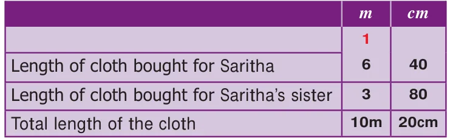
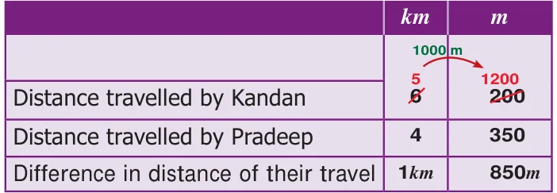

<!DOCTYPE html>
<html lang="en">
<head>
<meta charset="UTF-8">
<meta name="viewport" content="width=device-width,initial-scale=1">
<title>2.4 Fundamental Operations on Quantities with Different Units — Measurements</title>
<meta name="description" content="Class 6 Mathematics · Term 2 · Measurements · 2.4 Fundamental Operations on Quantities with Different Units">
<link rel="icon" href="data:image/svg+xml,<svg xmlns='http://www.w3.org/2000/svg' viewBox='0 0 100 100'><text y='.9em' font-size='90'>📘</text></svg>">
<link rel="stylesheet" href="../../../assets/book.css">
<link rel="stylesheet" href="https://cdn.jsdelivr.net/npm/katex@0.16.11/dist/katex.min.css" crossorigin="anonymous">
</head>
<body>
<header class="topbar">
<div class="topbar-in">
  <div class="crumb">
    <span class="c1"><a href="../../../index.html">Library</a> · <a href="../../index.html">Class 6 Mathematics · Term 2</a></span>
    <span class="c2">Measurements · 2.4 Fundamental Operations on Quantities with Different Units</span>
  </div>
  <a class="tb-btn" data-nav="prev" href="../../02-measurements/03-conversions-within-the-metric-system-2.3/index.html" title="2.3 Conversions within the Metric System">←</a>
  <details class="drawer"><summary class="tb-btn" title="Sections in this chapter">☰</summary>
<div class="drawer-panel"><div class="dh">Measurements</div><a href="../01-introduction-2.1/index.html">2.1 Introduction</a><a href="../02-recap-2.2/index.html">2.2 Recap</a><a href="../03-conversions-within-the-metric-system-2.3/index.html">2.3 Conversions within the Metric System</a><a href="../04-fundamental-operations-on-quantities-with-different-units-2.4/index.html" aria-current="page">2.4 Fundamental Operations on Quantities with Different Units</a><a href="../05-exercise-2.1/index.html">Exercise 2.1</a><a href="../06-measures-of-time-2.5/index.html">2.5 Measures of Time</a><a href="../07-ict-corner/index.html">ICT CORNER</a><a href="../08-exercise-2.2/index.html">Exercise 2.2</a><a href="../09-exercise-2.3/index.html">Exercise 2.3; Miscellaneous practice Problems</a><a href="../10-summary/index.html">Summary</a></div></details>
  <a class="tb-btn" data-nav="next" href="../../02-measurements/05-exercise-2.1/index.html" title="Exercise 2.1">→</a>
  <button class="tb-btn" data-theme-toggle title="Toggle light / dark" aria-label="Toggle light or dark theme">◐</button>
</div>
<div class="progress"><span style="width:36.2%"></span></div>
</header>
<main class="wrap">
<div class="sec-head">
  <p class="eyebrow"><a href="../index.html">Chapter 2 · Measurements</a></p>
  <h1>2.4 Fundamental Operations on Quantities with Different Units</h1>
  <p class="sec-meta">Textbook pages 6–7 · 2 figures</p>
</div>
<article class="prose">
<p>We can do the basic operations on the metric units as we do the decimal operations. Note that, measurements with the same unit can be added/ subtracted, but unlike units of measurements should be converted into like units and then they can be added / subtracted. Example 8: Saritha bought 6 m and 40 cm of cloth for herself and 3 m and 80 cm of cloth for her sister. What was the total length of the cloth bought by her?</p>
<h4 class="callout-h" id="s-solution">Solution:</h4>
<figure class="fig"></figure>
<p>Example 9: Pradeep travels 4 km and 350 m to reach to the market, while Kandan travels 6 km and 200 m to reach to the same market from their houses. How much distance does Kandan travel more than Pradeep?</p>
<h4 class="callout-h" id="s-solution">Solution:</h4>
<figure class="fig table-fig"></figure>
<p>Kandan travelled 1 km and 850 m more than Pradeep.</p>
<aside class="sidenote"><p>MEASUREMENTS</p></aside>
<p>Example 10: A child needs 100 g of vegetables per day. How many kg of vegetables will be needed for a school of strength 90.</p>
<h4 class="callout-h" id="s-solution">Solution :</h4>
<p>Total strength of the school \(= 90\) Weight of vegetables for each child per day \(= 100 g\) Total weight of vegetables for 90 children per day \(= 90 x 100 g\)</p>
<div class="mathblock"><p>\(= 9000 g = 9\) kg.</p></div>
<p>Example 11: A bag contains 81 kg of sugar. If the shopkeeper fill up these into small packets of 750 g. each, then how many packets can be made from 81 kg of sugar? Solution :Quantity of sugar in the bag \(= 81\) kg \(\frac{108}{81 000}\) Quantity of sugar filled in each packet \(=750 g 6000\)</p>
<aside class="sidenote"><p>6000 ?</p></aside>
<p>Number of packets required \(= 81\) kg \(\div 750 g\)</p>
<div class="mathblock"><p>\(= 81x1000 g \div 750 g = 81000 g \div 750 g = 108\)</p></div>
<h2 class="callout-h" id="s-think">Think</h2>
<ul class="qlist">
<li><span class="mk">1.</span><span class="lt">Five kilograms of compost is needed for a coconut tree for every six months. How many</span></li>
</ul>
<p>kilograms of compost is needed for 50 such coconut trees for one and half years.?</p>
<ul class="qlist">
<li><span class="mk">2.</span><span class="lt">Is this correct? 4 m+3 cm \(=7 m\)</span></li>
<li><span class="mk">3.</span><span class="lt">Can we add the following?</span></li>
<li><span class="mk">i)</span><span class="lt">\(6l + 7kg\), ii) 3 m +5 l iii) 400 ml +300 g</span></li>
</ul>
</article>
<nav class="pager"><a class="" data-nav="prev" href="../../02-measurements/03-conversions-within-the-metric-system-2.3/index.html"><span class="dir">← Previous</span><span class="t">2.3 Conversions within the Metric System</span><span class="ch">Measurements</span></a><a class="nx" data-nav="next" href="../../02-measurements/05-exercise-2.1/index.html"><span class="dir">Next →</span><span class="t">Exercise 2.1</span><span class="ch">Measurements</span></a></nav>
</main><footer class="site">Generated from the source textbook PDFs · text, figures and exercises belong to their respective publishers.</footer><script defer src="https://cdn.jsdelivr.net/npm/katex@0.16.11/dist/katex.min.js" crossorigin="anonymous"></script>
<script defer src="https://cdn.jsdelivr.net/npm/katex@0.16.11/dist/contrib/auto-render.min.js" crossorigin="anonymous"
  onload="renderMathInElement(document.body,{delimiters:[
    {left:'\\(',right:'\\)',display:false},
    {left:'$$',right:'$$',display:true},
    {left:'\\[',right:'\\]',display:true}],throwOnError:false,ignoredTags:['script','noscript','style','textarea','pre','code']})"></script>
<script src="../../../assets/book.js"></script>
<script defer src="../../../../assets/search.js?v=1789782769"></script>
<script defer src="../../../../assets/screenshot.js?v=2"></script>
</body>
</html>
